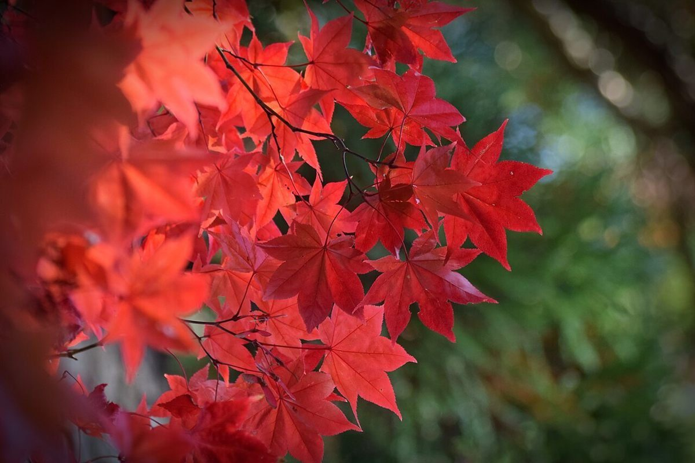

香川県坂出市林田町3117-3
電話: 090-8287-0414
Instagram: gallery_naya0414
Googleマップで開く
駐車場、最寄り駅からの道のり、所要時間などは準備中です。お越しの前に、お電話でお問い合わせください。

営業時間・料金・メニューなどは準備中です。詳しくはお問い合わせください。
掲載写真はフリー素材のイメージ写真で、店舗の実際の様子ではありません。他地域で撮影されたもの、撮影地が不明なものを含みます。